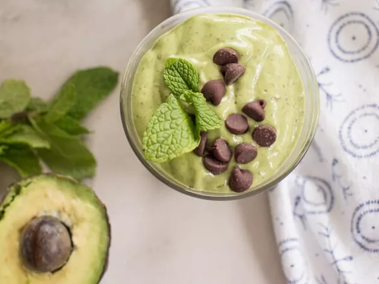
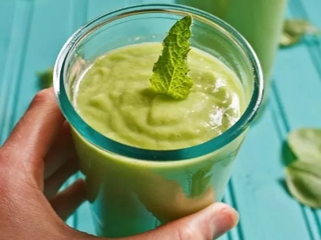
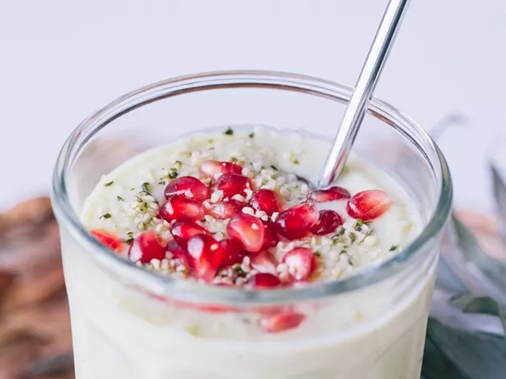
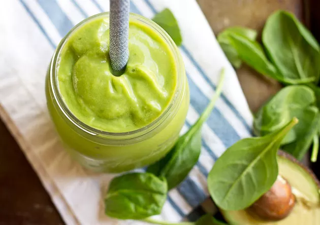
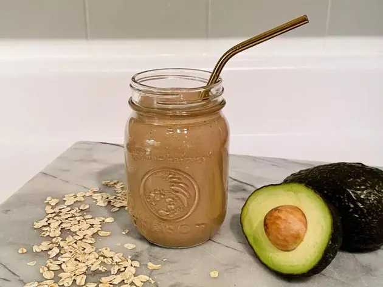
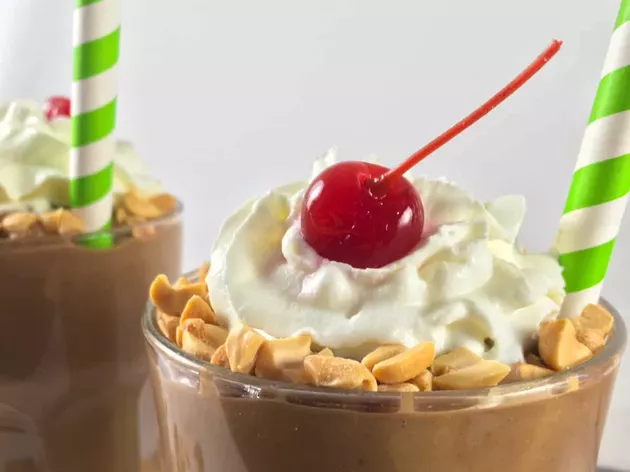

Let's face it: Avocados are somewhat of a healthy aging superfood. Eating them every day has so many benefits, and avocado smoothie recipes make it easy to incorporate them into your routine.
But first, here's how avocados help you age healthier.
Avocados and Aging
Avocados are rich in a plethora of nutrients that support healthy aging. "Avocados are rich in healthy fats, fiber and antioxidants meaning that they can improve your gut, brain and heart health," says Vivian Schemper, RD.
The monounsaturated fats in avocados protect your heart by keeping triglyceride and cholesterol levels in check, according to a February 2016 review in the Journal of Clinical Lipidology.
"In addition to protecting against heart disease, avocados can improve your gut health and may play a role in optimizing brain function," says Su-Nui Escobar, RD.
In particular, the omega-3 fats you'll get from avocados have been linked to protection from age-related brain damage, per May 2017 research in Nutritional Neuroscience.
Unsaturated fats and omega-3s may also help prevent or reduce symptoms of inflammatory conditions like arthritis, per June 2020 research in the Mediterranean Journal of Rheumatology.
Skin health is another aspect of aging that your diet plays a role in. Research suggests that the fatty acids and antioxidants in avocados may help with skin aging.
An avocado a day may improve the elasticity and firmness of your skin, which could reduce or prevent signs of aging like wrinkles and sagging, according to a January 2022 study in the Journal of Cosmetic Dermatology.
Additionally, the antioxidants in avocados — namely lutein and zeaxanthin — may help protect your eyes against age-related damage, known as macular degeneration. These antioxidants support eye health by reducing oxidative stress and inflammation, according to a November 2020 review in Antioxidants.
"Eating an avocado every day will not make you 18 again, but given all the nutrients it has, it's definitely worth including in your diet," Schemper says.
Learn how these delicious avocado smoothies can support longevity, and sip your way to better health.
1. Mint Chocolate Chip Avocado Smoothie
Green smoothies don't have to be boring, and this ice-cream-inspired avocado smoothie is a great example.
"Spinach and banana will both contribute to overall fruit and vegetable servings, helping meet the recommended servings/day to aid in the prevention of chronic disease," says Jess DeGore, RD, dietitian and diabetes educator. "Leafy greens are also great sources of folate, lutein and zeaxanthin — nutrients that may help reduce your risk of vision loss."
Throwing mint into the mix makes this a brain-promoting drink. Peppermint has high levels of menthol and methane, which have been linked to improvements in mental performance, according to an August 2018 study in Nutrients.
Additionally, the Greek yogurt in this smoothie is a good source of protein. "Protein helps improve bone strength, reduces the risk of osteoporosis and promotes healthy muscles, DeGore says. "Replacing the almond milk with dairy milk will boost the protein even more."
2. Pear Smoothie With Avocado and Spinach
Full of fruits and vegetables, this avocado smoothie is full of antioxidants and vitamins. "Coconut water, pears and avocados all have potassium, an electrolyte that helps you stay hydrated," Degore says. "This smoothie makes a perfect post-workout snack."
Potassium, an essential mineral, also helps maintain functions that may decline as we age. Potassium is important for blood pressure regulation, preventing bone loss and supporting kidney health, according to the Linus Pauling Institute.
"The spinach in this recipe also provides calcium, which is important for bone health," DeGore says. "But overall, this smoothie could be better balanced with the addition of dairy milk, Greek yogurt or another protein source."
3. Avocado Pineapple Smoothie
This just in: Not all avocado smoothies are green! A tropical, dreamy delight, this Avocado Pineapple Smoothie sweetened with banana and a hint of vanilla is the perfect option for switching things up.
"This creamy, refreshing smoothie is a delicious way to support longevity," Escobar says. "The avocado and hemp seeds add a good dose of healthy fats to this recipe, making the smoothie creamy, delicious and more satisfying."
4. Avocado Green Smoothie
This delicious avocado smoothie boasts some serious tropical flavor thanks to the combination of pineapple and coconut milk. Throwing in a tangy orange juice gives it a citrusy burst as well as some immune-enhancing vitamin C.
"This smoothie is a great way to start your day with a healthy dose of leafy green vegetables, which can potentially slow down age-related cognitive decline," Escobar says.
Eating one portion of leafy green vegetables a day may slow down the rate of cognitive decline pretty significantly, according to a January 2018 study in the Journal of Neurology.
5. Chocolate Avocado Smoothie
Two thumbs up for the avocado in this smoothie. It is not only satisfying, but also good for your heart — something we need to care for and protect, especially as we age.
"Avocados are full of monounsaturated fats," says Veronika Rouse, RD, CDE. "This specific type of fat will not only keep you full, but has also been shown to help reduce cholesterol levels and inflammation, which in turn, helps reduce your risk of heart disease."
Oats add additional fiber to the smoothie, bumping it up to 14 grams! With peanut butter as a source of protein, this one is not only good for your heart, but also satisfying enough to keep you full.
6. Peanut Butter Avocado Smoothie
For many older adults, weight stability may be a challenge. A calorie-and-nutrient-dense meal option like this Peanut Butter Avocado Smoothie may be fitting for those needs.
Loaded with nutrient-dense ingredients including dates, peanut butter and avocado, this avocado smoothie can support healthy weight-gain goals. With one whole avocado, it supplies a healthy dose of potassium. And bonus, it has no added sugars.
One serving of this smoothie offers 688 calories and 19 grams of protein. But if weight gain is not your issue, its still got plenty of anti-aging potential. So, just drink half and enjoy!